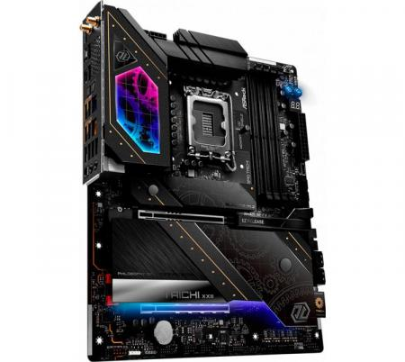
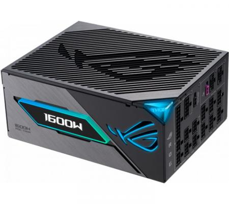
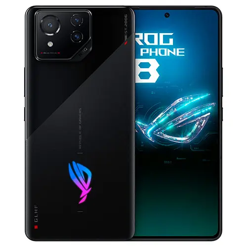

PC y notebooks
Instalación de sistemas, programas, mantenimiento, actualización y optimización del rendimiento.
Ver detalles ↗Servicio técnico para PC, notebooks y smartphones. Diagnóstico, mantenimiento, reparación de software y optimización para que tus dispositivos vuelvan a funcionar de manera confiable.
Atención técnica para computadoras y smartphones, desde fallas de software hasta mantenimiento y recuperación de información.
Instalación de sistemas, programas, mantenimiento, actualización y optimización del rendimiento.
Ver detalles ↗Configuración de Android, solución de problemas de software, actualizaciones y puesta a punto.
Ver detalles ↗Diagnóstico de componentes, almacenamiento, memoria, baterías y dispositivos conectados.
Ver detalles ↗Recuperación de archivos, copias de seguridad, eliminación de virus y protección del equipo.
Ver detalles ↗
Mantenimiento y asistencia técnica adaptados al tipo de equipo y a la falla que presenta.
Revisión de componentes de PC y notebooks y diagnóstico de problemas habituales en dispositivos móviles.





Te ayudamos a proteger tus archivos y a mantener tus dispositivos seguros y en buenas condiciones.
Asistencia para recuperar documentos, fotos, videos y otros datos cuando sea posible.
Respaldo de archivos en un disco externo u otro medio disponible.
Eliminación de virus, configuración de seguridad y recomendaciones de mantenimiento.
Contame qué sucede, qué dispositivo usás y desde cuándo ocurre. Te orientaré sobre los siguientes pasos.
PC de escritorio, notebooks y smartphones, especialmente dispositivos con Android.
Sí. Describí los síntomas y el modelo del equipo para orientar el diagnóstico.
Se puede revisar el sistema, los programas instalados, el almacenamiento y la memoria para identificar posibles mejoras.
Sí. Se ofrece asistencia con seguridad, eliminación de software no deseado y copias de seguridad. La recuperación de datos depende del estado del dispositivo.
Mandame una consulta indicando si es una PC, notebook o smartphone y qué problema presenta.